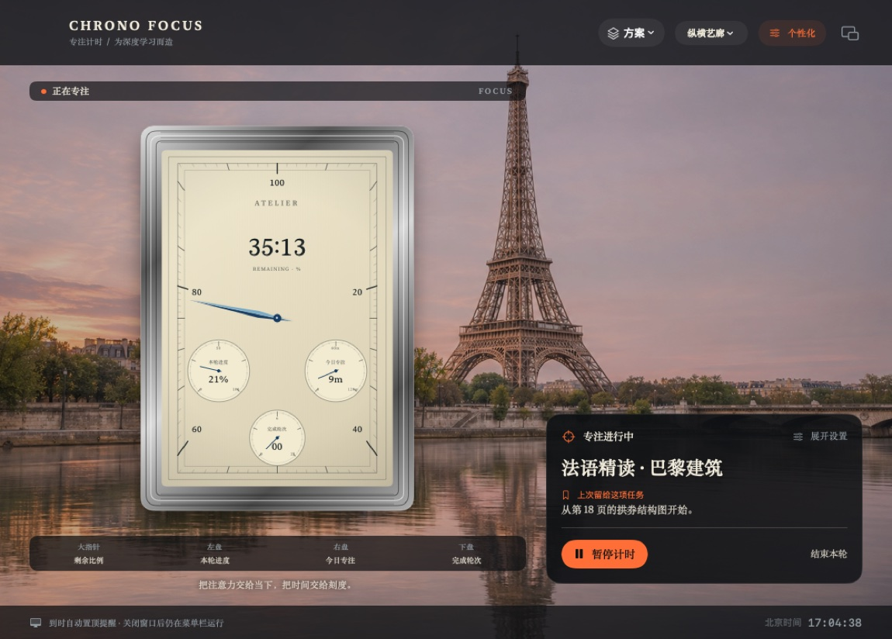
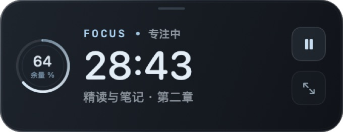

把常用时长存成学习方案
在 Mac 版里，把「精读 45 分钟」的任务、时长和喜欢的表盘存成方案。下次选中它，按下开始即可。

在 Mac 上最小化主窗口，表盘会收成一个可以拖动的悬浮窗。剩余时间、任务名和暂停键都在手边，到点后主窗口会回来提醒你。

在 Mac 版里，把「精读 45 分钟」的任务、时长和喜欢的表盘存成方案。下次选中它，按下开始即可。
Mac 版每完成一轮，就能收藏一枚专注印章。写下「下次从第 18 页第二段开始」，再打开同名任务时，就知道该从哪里接着读。
1.8 · Apple 芯片 · macOS 14 或更高版本
下载 Mac 安装包DMG · 33.3 MB
打开 DMG，将「专注计时」拖到 Applications（应用程序），再从「应用程序」启动。
此版本未经过 Apple 公证。如果你确认下载来源并决定使用，可在尝试打开后，前往「系统设置 → 隐私与安全性」查看针对这款应用的「仍要打开」选项。
070e08aea85d8af13aa18360f0b7b59ee83da3350ce7875770d41feae6d8da451.0 预览版 · Windows 11 · Intel / AMD x64
下载 Windows 预览版EXE · 41.4 MB
双击安装程序，按提示安装。从开始菜单打开 FOCUS。此预览版尚待 Windows 真机验证安装、悬浮窗和到时提醒。
安装程序未使用发行者证书签名，Windows 可能显示「无法识别的应用」。可核对下方校验值。若程序提示缺少 WebView2，请安装微软提供的 x64 运行时。
微软 WebView2 下载页 ↗7db6f77276fa2b938c99bf0baedc9f3358903dab18e634a68c6736ce56993868